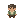
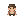
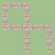
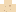
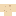
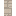
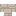

서고 방문객·길 이음·기념물·범위 책장·선물
게임 연결 없이 자산만 준비했습니다. 기존 넬리·모리스·아이비 도트와 입주 장면 모션도 준비되어 있습니다.
나그네

배우러 온 사람

꼬마

다른 마을 서기
모래 길 연결 예
돌바닥 길 연결 예

모래 · 독립 칸
연결 없음
모래 · 끝 조각
위
모래 · 끝 조각
오른쪽
모래 · 모서리
위 · 오른쪽
모래 · 끝 조각
아래
모래 · 일자
위 · 아래
모래 · 모서리
오른쪽 · 아래
모래 · T자
위 · 오른쪽 · 아래
모래 · 끝 조각
왼쪽
모래 · 모서리
위 · 왼쪽
모래 · 일자
오른쪽 · 왼쪽
모래 · T자

위 · 오른쪽 · 왼쪽
모래 · 모서리
아래 · 왼쪽
모래 · T자
위 · 아래 · 왼쪽
모래 · T자

오른쪽 · 아래 · 왼쪽
모래 · 교차
위 · 오른쪽 · 아래 · 왼쪽
돌 · 독립 칸
연결 없음
돌 · 끝 조각
위
돌 · 끝 조각
오른쪽
돌 · 모서리
위 · 오른쪽
돌 · 끝 조각
아래
돌 · 일자

위 · 아래
돌 · 모서리
오른쪽 · 아래
돌 · T자
위 · 오른쪽 · 아래
돌 · 끝 조각
왼쪽
돌 · 모서리
위 · 왼쪽
돌 · 일자
오른쪽 · 왼쪽
돌 · T자
위 · 오른쪽 · 왼쪽
돌 · 모서리
아래 · 왼쪽
돌 · T자
위 · 아래 · 왼쪽
돌 · T자

오른쪽 · 아래 · 왼쪽
돌 · 교차
위 · 오른쪽 · 아래 · 왼쪽
결혼
아이 출생
마을 잔치
이사 편지
새집·독립
스물일곱 권 완필
창세기–신명기
0/124/128/1212/12여호수아–에스더
0/124/128/1212/12욥기–아가
0/124/128/1212/12이사야–말라기
0/124/128/1212/12버들 바구니
8×816×16별자리 그림판
8×816×16씨앗 주머니
8×816×16